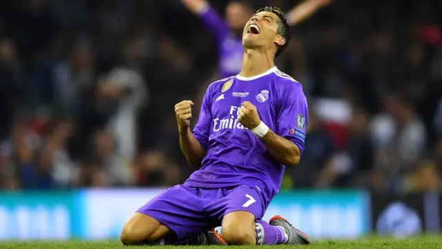

- Cristiano Ronaldo dos Santos Aveiro
- 40 años
- Portugal, Lisboa, Avenida del Fútbol Nº34
- 3845 84953 8439
- cr7@cr7.com
- My web
Mi trayectoria:
Sporting C. P. (2002-03)
Manchester United F. C. (2003-09)
Real Madrid C. F. (2009-18)
Juventus de Turín (2018-21)
Manchester United F. C. (2021-22)
Al-Nassr F. C. (2023-act.)
Mis titulos:
3x Jugador Mundial de la FIFA/h3>
4x Jugador del Año de la UEFA
5x Ganador del Balón de Oro
4x Ganador de la Bota de Oro (Europa)
Premio Puskás
22x Máximo goleador
9x Mejor Futbolista de la Temporada